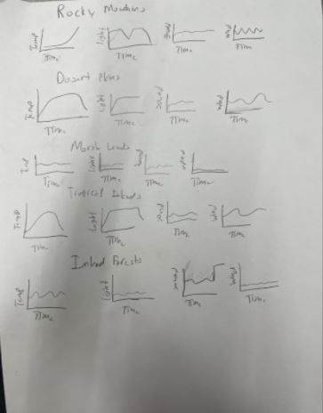

My Portfolio
1.1.9 Project

For my 1.1.9 Project I made a shape game where the winner is determined randomly. There is a different winner each time. When the race is over, the shapes move over to a podium and go to their corresponding spots. 1st place goes on the gold, 2nd on silver, and 3rd on bronze.
1.2.5 Project

For the 1.2.5 project I made a basketball drop game. The goal of the game is to drop as many basketballs into the basket within the time limit. You drop the balls by pressing the corresponding number on your keyboard. Once the time runs out you no longer can drop anymore balls and the game is over.
Scratch Project

For my scratch project, I made a dinosour jumping game. Cactus come at you randomly and you have to avoid them to try to get the highest score possible. If you hit a cactus, game over. If you die, a death screen pops up that gives you the option to re-run the game.
3.1.6 Project

After analyzing the graphs, for the 3.1.6 project we came to the conclusion that the answer is Inland Forests. We believed that the graphs most closely matched Inalnd Forests.
3.2.4 Project

For the 3.2.4 Project we analyzed and graphed honey production data given to us through a website. The graph above shows the average production of honey in the US in 2002, 2007, 2012, and 2017. We could see that honey production has increased from 2002 which is good news. We analyed all the states and found which states are contributing the most to honey production.
Final Project


For the Final Project, I made a ping pong game where you go againts an AI. There is two different maps that you can choose from but they are the same difficulty. When the game ends, a list shows up with the final score of the game and it displays a backround of the winner. This game is super fun and interactive and I believe its pretty well made.